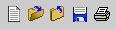
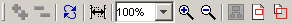
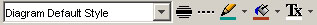
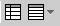
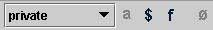

Toolbars
Open ModelSphere is provided with several sets of tools for
graphic creation
and modification.
The toolbars group together tools that are used in the model design
process. Some
toolbars have functions that can be used to improve the graphic
presentation of
models (For more detail on the drawing and color tools, see “Drawing
area”). The
other toolbars available contain functions that will be used in the
actual model design.
Depending on the window you are working in, certain tools will not be
available.
These are the different toolbars:
File
toolbar

- New
- Open...
- Close
- Save
- Print...
Edit
toolbar

- Undo (with a history of the modifications)
- Redo (with a history of the undo)
- Add (with a submenu of concepts)
- Copy
- Paste
- Delete
- Find...
- Find Next
Display
toolbar

- Expand All (for the explorer)
- Collapse All (for the explorer)
- Refresh
- Straighten (for the connectors)
- Scaling Percentage
- Zoom In
- Zoom Out
- Show Diagram
- Show/Hide Overview
- Show/Hide Magnifier
Format
toolbar

- Style (menu)
- Highlight (bold line)
- Dash Line
- Line Color
- Background Color
- Text Color
Navigation
toolbar

Creation
toolbar
Data modeling

- Select (graphical selection and manipulation tool)
- Table Creation
- View Creation
- Association Creation
- Key Creation
Process modeling

- Select (graphical selection and manipulation tool)
- Process Creation
- External Entity Creation
- Store Creation
- Flow Creation (submenu to choose the kind)
- Process Decomposition
- Renumbering
Class modeling

- Select (graphical selection and manipulation tool)
- Class Creation
- Interface Creation
- Exception Creation
- Package Creation
- Association Creation (submenu to choose the kind)
- Aggregation Creation (submenu to choose the kind)
- Composition Creation (submenu to choose the kind)
- Inheritence Creation (submenu to choose the kind)
UML
modeling
The UML modeling toolbar changes depending of the UML diagram type.
- Select (graphical selection
and manipulation tool)
- Actor Creation
- Action State Creation
- Start State Creation
- End State Creation
- Decision Creation
- Object Creation
- Action
flow Creation
- Note Creation
- Action State Decomposition
- Renumbering
- Link Creation
Drawing
toolbar

- Stamp
- Text
- Free line (submenu to choose the kind)
- Free Shape (submenu to choose the kind)
Tools
toolbar
- Link Creation
- Verify Integrity (Data modeling)
- Validate Database (Data modeling)
- Validate for Java (Class modeling)
Modifiers
toolbar

- Visibility (Class modeling)
- Abstract (Class modeling)
- Static (Class modeling)
- Final (Class modeling)
- Null (Data modeling)